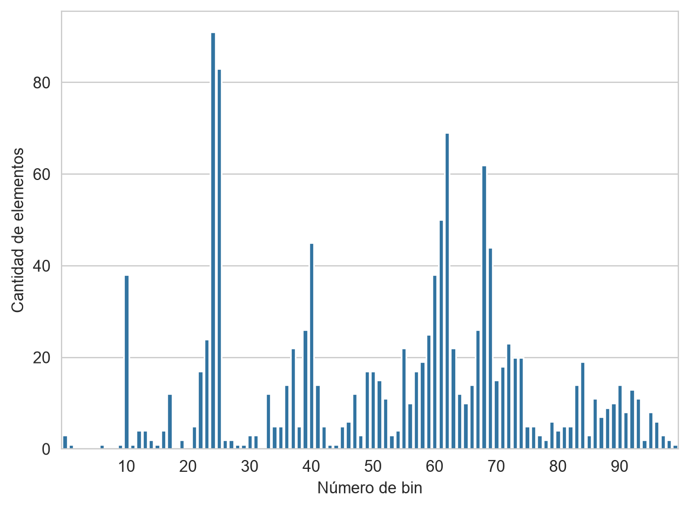
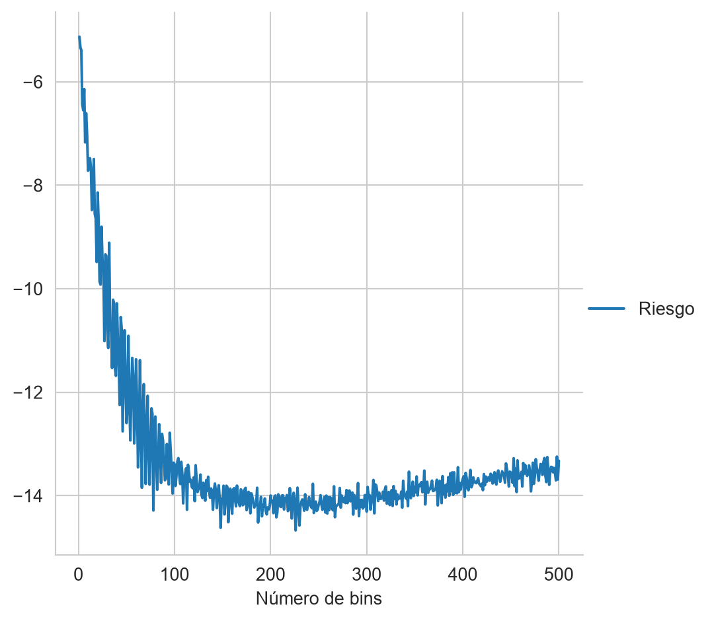
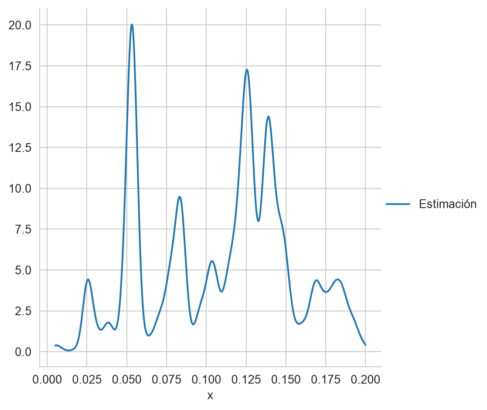
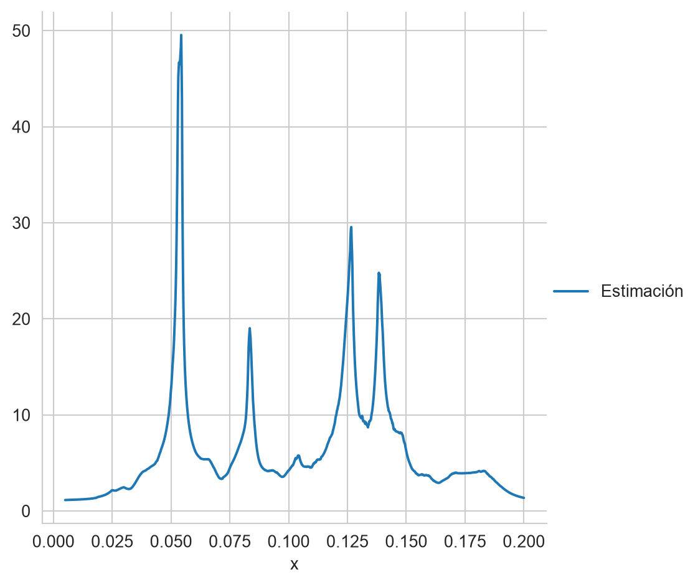

from sklearn.neighbors import NearestNeighbors,\
KNeighborsClassifier,\
KNeighborsRegressor
from sklearn.metrics import pairwise_distances
from sklearn.model_selection import train_test_split
from sklearn.preprocessing import StandardScaler
from scipy.stats import norm
from collections import Counter
from matplotlib import pylab as plt
import numpy as np
import pandas as pd
import seaborn as sns
URL_DATOS = ('https://github.com/INGEOTEC/AprendizajeComputacional/'
'releases/download/datos-v1')7 Métodos No Paramétricos
El objetivo de la unidad es conocer las características de diferentes métodos no paramétricos y aplicarlos para resolver problemas de regresión y clasificación.
7.1 Paquetes usados
7.2 Introducción
Los métodos paramétricos asumen que los datos provienen de un modelo común, esto da la ventaja de que el problema de estimar el modelo se limita a encontrar los parámetros del mismo, por ejemplo los parámetros de una distribución Gaussiana. Por otro lado en los métodos no paramétricos asumen que datos similares se comportan de manera similar, estos algoritmos también se les conoce como algoritmos de memoria o basados en instancias.
7.3 Histogramas
El primer problema que estudiaremos será la estimación no paramétrica de una función de densidad, \(f\), recordando que se cuenta con un conjunto \(\mathcal D = \{x_i\}\) que es tomado de \(f\) y el objetivo es usar \(\mathcal D\) para estimar la función de densidad \(\hat f\).
El histograma es una manera para estimar la función de densidad. Para formar un histograma se divide la línea en \(h\) segmentos disjuntos, los cuales se denominan bins. El histograma corresponde a una función constante por partes, donde la altura es la proporción de elementos de \(\mathcal D\) que caen en el bin analizado.
Suponiendo que todos los valores en \(\mathcal D\) están en el rango \([0, 1]\), los bins se pueden definir como:
\[ B_1 = [0, \frac{1}{m}), B_2=[\frac{1}{m}, \frac{2}{m}), \ldots, B_m=[\frac{m-1}{m}, 1], \]
donde \(m\) es el número de bins y \(h=\frac{1}{m}\). Se puede definir a \(\hat p_j = \frac{1}{N} \sum_{x \in \mathcal D} 1( x \in B_j )\) y \(p_j = \int_{B_j} f(u) du\), donde \(p_j\) es la probabilidad del \(j\)-ésimo bin y \(\hat p_j\) es su estimación. Usando esta definición se puede definir la estimación de \(f\) como:
\[ \hat f(x) = \sum_{j=1}^N \frac{\hat p_j}{h} 1(x \in B_j). \]
Con esta formulación se puede ver la motivación de usar histogramas como estimador de \(f\) véase:
\[ \mathbb E(\hat f(x)) = \frac{\mathbb E(\hat p_j)}{h} = \frac{p_j}{h} = \frac{\int_{B_j} f(u) du}{h} \approx \frac{hf(x)}{h} = f(x). \]
7.3.1 Selección del tamaño del bin
Una parte crítica para usar un histograma es la selección de \(h\) o equivalentemente el número de bins del estimador. Utilizando el método descrito en Wasserman (2004), el cual se basa en minimizar el riesgo haciendo una validación cruzada, obteniendo la siguiente ecuación:
\[ \hat J(h) = \frac{2}{(N-1) h} - \frac{N+1}{(N-1) h} \sum_{j=1}^N {\hat p}^2_j. \]
Para ilustrar el uso de la ecuación de minimización del riesgo se utilizará en el ejemplo utilizado en Wasserman (2004). Los datos se pueden descargar de http://www.stat.cmu.edu/~larry/all-of-statistics/=Rprograms/a1882_25.dat.
El primer paso es leer el conjunto de datos, dentro del ejemplo usado en Wasserman (2004) se eliminaron todos los datos menores a \(0.2\), esto se refleja en la última línea.
D = np.r_[[list(map(float, x.strip().split()))
for x in open("a1882_25.dat").readlines()]]
D = D[:, 2]
D = D[D <= 0.2]Haciendo un paréntesis en el ejemplo, para poder calcular \(\hat p_j\) es necesario calcular el histograma; dado que los valores están normalizados podemos realizar el histograma utilizando algunas funciones de numpy y librerías tradicionales.
Para ilustrar el método para generar el histograma se genera un histograma con 100 bins (primera línea). El siguiente paso (segunda línea) es encontrar los límites de los bins, para este proceso se usa la función np.linspace. En la tercera línea se encuentra el bin de cada elemento, con la característica que np.searchsorted regresa \(0\) si el valor es menor que el límite inferior y el tamaño del arreglo si es mayor. Entonces las líneas \(4\) y \(5\) se encargan de arreglar estas dos características. Finalmente se cuenta el número de elementos que pertenecen a cada bin con la ayuda de la clase Counter.
m = 100
limits = np.linspace(D.min(), D.max(), m + 1)
_ = np.searchsorted(limits, D, side='right')
_[_ == 0] = 1
_[_ == m + 1] = m
p_j = Counter(_)Realizando el procedimiento anterior se obtiene el histograma presentado en la Figura 7.1
Código
keys = sorted(p_j.keys())
pj = [p_j[x] for x in range(keys[0], m + 1)]
pos = list(range(10, m, 10))
fig = sns.barplot(x=list(range(keys[0], m + 1)), y=pj)
fig.set_xticks(ticks=pos, labels=[f'{x}' for x in pos])
fig.set_xlabel('Número de bin')
_ = fig.set_ylabel('Cantidad de elementos')
Uniendo estos elementos se puede definir una función de riesgo de la siguiente manera
def riesgo(D, m=10):
"""Riesgo de validación cruzada de histograma"""
N = D.shape[0]
limits = np.linspace(D.min(), D.max(), m + 1)
h = limits[1] - limits[0]
_ = np.searchsorted(limits, D, side='right')
_[_ == 0] = 1
_[_ == m + 1] = m
p_j = Counter(_)
cuadrado = sum([(x / N)**2 for x in p_j.values()])
return (2 / ((N - 1) * h)) - ((N + 1) * cuadrado / ((N - 1) * h))donde las partes que no han sido descritas solamente implementan la ecuación \(\hat J(h)\).
Finalmente se busca el valor \(h\) que minimiza la ecuación, iterando por diferentes valores de \(m\) se obtiene la Figura 7.2 donde se observa la variación del riesgo con diferentes niveles de bin.
Código
rr = [riesgo(D, m=i) for i in range(1, 501)]
data = pd.DataFrame({'Riesgo': rr, 'Número de bins': list(range(1, 501))})
data.set_index('Número de bins', inplace=True)
_ = sns.relplot(data, kind='line')
7.4 Estimador de Densidad por Kernel
Como se puede observar el histograma es un estimador discreto, otro estimador muy utilizado que cuenta con la característica de ser suave es el estimador de densidad por kernel, \(K\), el cual está definido de la siguiente manera.
\[ \hat f(x) = \frac{1}{hN} \sum_{w \in \mathcal D} K(\frac{x - w}{h}), \]
donde el kernel \(K\) podría ser \(K(x) = \frac{1}{\sqrt{2\pi}} \exp [-\frac{x^2}{2}],\) con parámetros \(\mu=0\) y \(\sigma=1\). La Figura 7.3 muestra la estimación obtenida, con \(h=0.003\), en los datos utilizados en el ejemplo del histograma.
Código
def hat_f(x, D, h):
N = D.shape[0]
return norm.pdf((x - D) / h).sum() / (h * N)
x = np.linspace(D.min(), D.max(), D.shape[0])
data = pd.DataFrame({'Estimación': [hat_f(_, D, 0.003) for _ in x], 'x': x})
data.set_index('x', inplace=True)
_ = sns.relplot(data, kind='line')
7.4.1 Caso multidimensional
Para el caso multidimensional el estimador quedaría como
\[ \hat f(\mathbf x) = \frac{1}{h^dN} \sum_{\mathbf w \in \mathcal D} K(\frac{\mathbf x - \mathbf w}{h}), \]
donde \(d\) corresponde al número de dimensiones. Un kernel utilizado es:
\[ K(\mathbf x) = (\frac{1}{\sqrt{2\pi}})^d \exp [- \frac{\mid\mid \mathbf x \mid\mid ^2}{2}]. \]
7.5 Estimador de Densidad por Vecinos Cercanos
Dado un conjunto \(\mathcal D=(x_1, \ldots, x_N)\), es decir, donde se conoce la posición de \(x\) en \(\mathcal D\) y una medida de distancia \(d\), los \(k\) vecinos cercanos a \(x\), \(\textsf{kNN}(x)\), se puede calcular ordenando \(\mathcal D\) de la siguiente manera. Sea \((\pi_1, \pi_2, \ldots, \pi_N)\) la permutación tal que \(x_{\pi_1}=\textsf{arg min}_{w \in \mathcal D} d(x, w)\), donde \(w_{\pi_1} \in \mathcal D\), \(\pi_2\) corresponde al segundo índice menor, y así sucesivamente. Usando esta notación los \(k\) vecinos corresponden a \(\textsf{kNN}(x)=(x_{\pi_1}, x_{\pi_2}, \ldots, x_{\pi_k}).\)
Una manera intuitiva de definir \(h\) sería en lugar de pensar en un valor constante para toda la función, utilizar la distancia que existe con el \(k\) vecino más cercano, es decir, \(h=d(w_{\pi_k}, x)=d_k(x)\), donde \(w_{\pi_k} \in \mathcal D\). Remplazando esto en el estimado de densidad por kernel se obtiene:
\[ \hat f(x) = \frac{1}{d_k(x) N} \sum_{w \in \mathcal D} K(\frac{x - w}{d_k(x)}). \]
Utilizando los datos anteriores el estimador por vecinos cercanos, con \(k=50\), quedaría como:
Código
def hat_f_k(x, D, k):
_ = np.fabs(D - x)
_.sort()
h = _[k]
N = D.shape[0]
return norm.pdf((x - D) / h).sum() / (h * N)
x = np.linspace(D.min(), D.max(), D.shape[0])
data = pd.DataFrame({'Estimación': [hat_f_k(_, D, 50) for _ in x], 'x': x})
data.set_index('x', inplace=True)
_ = sns.relplot(data, kind='line')
7.6 Clasificador de vecinos cercanos
El clasificador de vecinos cercanos (Fix y Hodges (1951)) es un clasificador simple de entender, la idea es utilizar el conjunto de entrenamiento y una función de distancia para asignar la clase de acuerdo a los k-vecinos más cercanos al objeto deseado.
Utilizando la notación \(kNN(x)\) se define el volumen de \(kNN(x)\) como \(V(x)\) y \(N_c(x)=\sum_{x_{\pi} \in \textsf{kNN}(x)} 1(y_\pi=c)\) donde \(y_\pi\) es la salida asociada a \(x_\pi\). \(N_c(x)\) corresponde al número de vecinos de \(x\) que pertenecen a la clase \(c\). Con esta notación se define la verosimilitud como:
\[ \mathbb P(\mathcal X=x \mid \mathcal Y=c) = \frac{N_c(x)}{N_c V(x)}, \]
donde \(N_c\) es el número de elementos en \(\mathcal D\) de la clase \(c.\)
Utilizando el Teorema de Bayes y sabiendo que \(\mathcal P(Y=c)=\frac{N_c}{N}\) la probabilidad a posteriori queda como:
\[ \begin{split} \mathcal P(\mathcal Y=c \mid \mathcal X=x) &= \frac{\frac{N_c(x)}{N_c V(x)} \frac{N_c}{N}}{\sum_u \frac{N_u(x)}{N_u V(x)} \frac{N_u}{N}} \\ &= \frac{N_c(x)}{\sum_u N_u(x)} \\ &= \frac{N_c(x)}{k}, \end{split} \]
donde \(\sum_u N_u(x)=k\) porque \(N_u(x)\) corresponde al número de elementos de \(\textsf{kNN}(x)\) que pertenecen a la clase \(u\) y en total se seleccionan \(k\) elementos.
7.6.1 Implementación
El clasificador de vecinos cercanos tiene una implementación directa, aunque ineficiente, cuando el número de ejemplos en el conjunto de entrenamiento es grande. Esta implementación se ejemplifica con el problema de tamizaje de diabetes (Sección B.1.3), que consiste en clasificar si una persona adulta tiene un diagnóstico previo de diabetes para decidir a quién se le ofrece una prueba de glucosa. Los datos de Salud se leen del release datos-v1. Las variables de texto se convierten en indicadoras como en la Sección 3.2, y los datos se dividen en el conjunto de entrenamiento y prueba de la siguiente manera.
salud = pd.read_csv(f'{URL_DATOS}/ensanut_salud.csv.gz')
X = pd.get_dummies(salud.drop(columns=['diabetes', 'factor']),
drop_first=True, dtype=float)
y = salud['diabetes'].to_numpy()
T, G, y_t, y_g = train_test_split(X, y, test_size=0.2,
random_state=0, stratify=y)Los vecinos cercanos se definen mediante una distancia, y las variables que se miden en unidades grandes, por ejemplo el peso en kilogramos o la edad en años, dominarían a las indicadoras, que solamente valen cero o uno. Por esta razón las variables se estandarizan, y como la estandarización utiliza estadísticas de los datos se ajusta solamente con \(\mathcal T\) y después se aplica a \(\mathcal G\) (Sección 3.2).
scaler = StandardScaler().fit(T)
T = scaler.transform(T)
G = scaler.transform(G)7.6.1.1 \(\textsf{kNN}\)
Lo primero que se realiza es la función para calcular los \(\textsf{kNN}(x)\) esto se puede hacer generando una función kNN que recibe de parámetros \(x\), el conjunto \(\mathcal D\), la cantidad de vecinos (\(k\)) y la distancia.
El código de la función kNN se muestra a continuación, donde en la primera línea se convierte a \(x\) en un arreglo de dos dimensiones. Esto tiene el objetivo de generar un código que pueda buscar los \(k\) vecinos cercanos de un conjunto de puntos. Por ejemplo, se podría calcular los vecinos cercanos de todo el conjunto \(\mathcal G.\)
La segunda línea calcula los vecinos cercanos usando la función argsort lo único que se tiene que conocer es el eje donde se va a realizar la operación que en este caso es el \(0.\) La transpuesta es para regresar el índice de los vecinos en cada renglón.
def kNN(x, D, k=1, d=lambda x, y: pairwise_distances(x, y)):
x = np.atleast_2d(x)
return (d(D, x).argsort(axis=0))[:k].TEn este momento es importante mencionar que el problema de los \(k\) vecinos cercanos tiene muchas aplicaciones además de los algoritmos de aprendizaje supervisado que se verán en esta unidad. Por ejemplo, cuando uno tiene una colección de objetos que podrían ser documentos, videos, fotografías o cualquier objeto, este problema permite encontrar los objetos más cercanos a un objeto dado. Lo que se desea es que el algoritmo regrese el resultado lo antes posible y por ese motivo no se puede utilizar el algoritmo que se acaba de mencionar dado que compara \(x\) contra todos los elementos de \(\mathcal D.\) El área que estudia este tipo de problemas es el área de Recuperación de Información.
Por ejemplo, el siguiente código calcula los cinco vecinos más cercanos de los tres primeros elementos de \(\mathcal G.\)
kNN(G[:3], T, k=5)array([[2538, 4311, 1, 3944, 239],
[4589, 1331, 533, 4072, 1716],
[4359, 2267, 2380, 4743, 2860]])La manera más sencilla de crear el clasificador de vecinos cercanos es utilizando un método exhaustivo en el cálculo de distancia. Como se comentó, existen métodos más eficientes y la clase NearestNeighbors implementa dos de ellos adicionales al método exhaustivo. Por ejemplo, el siguiente código realiza el procedimiento equivalente al ejemplo visto previamente.
knn = NearestNeighbors(n_neighbors=5).fit(T)
knn.kneighbors(G[:3], return_distance=False)array([[2538, 4311, 1, 3944, 239],
[4589, 1331, 533, 4072, 1716],
[4359, 2267, 2380, 4743, 2860]])7.6.1.2 \(N_c(x)\)
El clasificador se basa en la función \(N_c(x)\), esta función se implementa conociendo las etiquetas y \(\textsf{kNN}(x)\). Aunque \(N_c(x)\) requiere el parámetro de la clase, la función calculará \(N_c(x)\) para todas las clases. La función N_c recibe de parámetros todos los parámetros de kNN y además requiere las clases de cada elemento de \(\mathcal D\) estas clases se dan como un arreglo adicional. El siguiente código muestra la función, donde en la primera línea se calcula los \(k\) vecinos y después se transforman los índices a las clases correspondientes, el resultado es guardado en la variable knn. La segunda línea usa la clase Counter para contar la frecuencia de cada clase en cada ejemplo dado en x.
def N_c(x, D, clases, k=1,
d=lambda x, y: pairwise_distances(x, y)):
knn = clases[kNN(x, D, k=k, d=d)]
return [Counter(x) for x in knn]Por ejemplo, la siguiente instrucción calcula \(N_c(x)\) para todos los datos en \(\mathcal G\) usando \(k=5.\)
nc = N_c(G, T, y_t, k=5)El elemento en el índice 100, tiene el siguiente resultado {0: 5}, que indica que la clase \(0\), fue vista \(5\). El error de este algoritmo en el conjunto de prueba es \(0.1033\), calculado con las siguientes instrucciones. Como referencia, un clasificador que siempre responde que la persona no tiene diabetes tiene un error de \(0.0911\). Se observa que la primera línea genera las predicciones usando la función most_common y a continuación se calcula el error.
hy = np.array([x.most_common(n=1)[0][0] for x in nc])
error = (y_g != hy).mean()
Nota
La información dada hasta el momento tiene la finalidad de explicar el funcionamiento del algoritmo, una implementación del clasificador de vecinos cercanos usando métodos eficientes para calcular \(\textsf{kNN}\) se encuentra en la clase KNeighborsClassifier la cual se puede utilizar de la siguiente manera.
kcl = KNeighborsClassifier().fit(T, y_t)
hy = kcl.predict(G)7.7 Regresión
La idea de utilizar vecinos cercanos no es solamente para problemas de clasificación, en problemas de regresión se puede seguir un razonamiento equivalente, el único cambio es en la función \(N_c(x)\) donde en lugar de calcular la frecuencia de las clases de los vecinos cercanos a \(x\) se hace un promedio (pesado) de la respuesta de cada uno de los vecinos cercanos.
Para ilustrar esta adecuación en problemas de regresión se utilizan los datos de Territorio (Sección B.1.5) para aproximar la escolaridad de un barrio, medida como el grado promedio de escolaridad de cada AGEB de Aguascalientes, con la composición de establecimientos del DENUE cuando el censo no es reciente. Estos datos y los conjuntos se obtienen con las siguientes instrucciones. Los conteos de establecimientos y la población tienen escalas muy distintas, por lo que se estandarizan con las estadísticas de \(\mathcal T\) por la misma razón que en la clasificación.
territorio = pd.read_csv(f'{URL_DATOS}/censo_denue_territorio.csv')
X = territorio.drop(columns=['clave_ageb', 'municipio',
'grado_promedio_escolaridad',
'pct_viv_internet',
'pct_sin_servicio_salud',
'pct_jefatura_femenina'])
y = territorio['grado_promedio_escolaridad'].to_numpy()
T, G, y_t, y_g = train_test_split(X, y, test_size=0.2,
random_state=0)
scaler = StandardScaler().fit(T)
T = scaler.transform(T)
G = scaler.transform(G)Se puede observar en la función regresion que la diferencia con clasificación es que se calcula el promedio, en lugar de contar la frecuencia de las clases.
def regresion(x, D, respuesta, k=1,
d=lambda x, y: pairwise_distances(x, y)):
knn = respuesta[kNN(x, D, k=k, d=d)]
return knn.mean(axis=1)La media del error absoluto en el conjunto \(\mathcal G\) es \(1.3065\) años de escolaridad, es decir, ese es el error promedio al aproximar la escolaridad de una AGEB. Este error se calculó con las siguientes instrucciones.
hy = regresion(G, T, y_t, k=5)
error = np.fabs(y_g - hy).mean()La clase equivalente a KNeighborsClassifier para regresión es KNeighborsRegressor la cual se puede utilizar así.
krg = KNeighborsRegressor().fit(T, y_t)
hy = krg.predict(G)7.8 Resumen
Los métodos no paramétricos cambian el supuesto sobre la forma de la distribución por el supuesto de que los datos parecidos se comportan de manera parecida. La densidad se puede estimar con histogramas (Sección 7.3), con kernels (Figura 7.3) o con vecinos cercanos (Figura 7.4), y los mismos vecinos sirven para clasificar y para hacer regresión (Sección 7.7). A cambio de no suponer una forma, estos métodos conservan los datos de entrenamiento y los consultan en cada predicción. Además, su comportamiento depende de hiperparámetros como el tamaño del bin o el número de vecinos, que deben ajustarse con datos de validación, y de que haya suficientes datos cercanos, algo que es más difícil conforme crece el número de variables.
Una alternativa a guardar todos los datos es modelar directamente la frontera que separa a las clases. Los discriminantes lineales, que hacen justamente eso, se presentan en Capítulo 8.